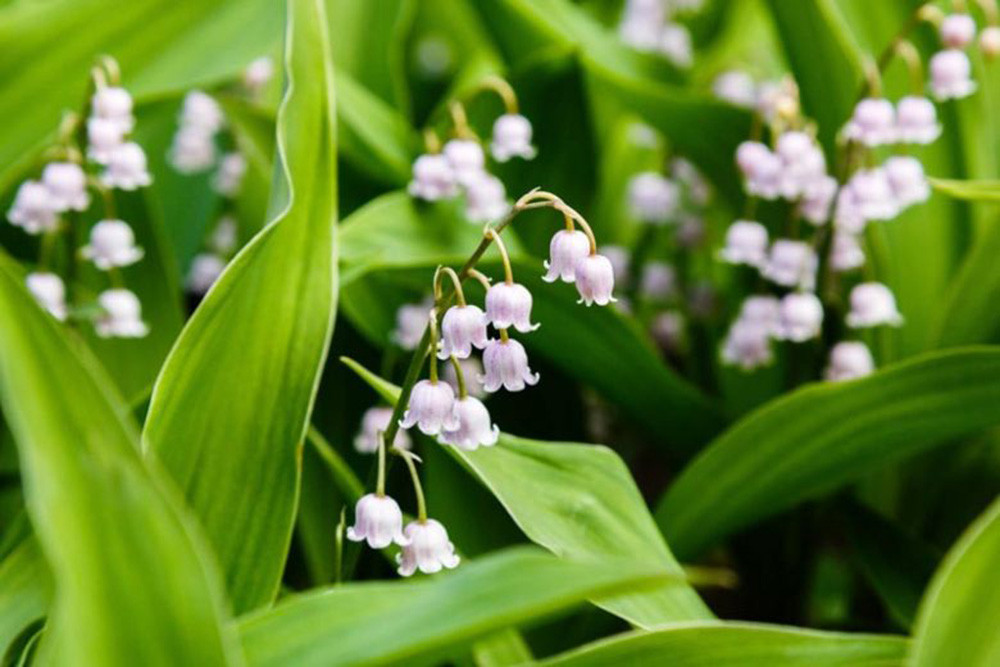

Xuất xứ: Châu Âu
Màu sắc: Trắng
Chiều cao: 15 - 30 cm
Mùa nở hoa Mùa xuân
Hoa Linh Lan (Lily of the Valley) là loài hoa nhỏ nhắn với những bông hoa trắng hình chiếc chuông rủ xuống duyên dáng. Loài hoa này được yêu thích bởi vẻ đẹp tinh tế cùng hương thơm nhẹ nhàng, dễ chịu. Trong nhiều nền văn hóa, Hoa Linh Lan tượng trưng cho sự may mắn, hạnh phúc và những khởi đầu tốt đẹp. Cây thích hợp trồng trong chậu hoặc trang trí sân vườn, tạo điểm nhấn thanh lịch cho không gian sống.